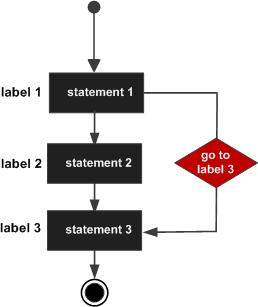

A goto statement provides an unconditional jump from the goto to a labeled statement in the same function.
NOTE − Use of goto statement is highly discouraged because it makes difficult to trace the control flow of a program, making the program hard to understand and hard to modify. Any program that uses a goto can be rewritten so that it doesn't need the goto.
The syntax of a goto statement in C++ is −
goto label; .. . label: statement;
Where label is an identifier that identifies a labeled statement. A labeled statement is any statement that is preceded by an identifier followed by a colon (:).

#include <iostream> using namespace std; int main () { // Local variable declaration: int a = 10; // do loop execution LOOP:do { if( a == 15) { // skip the iteration. a = a + 1; goto LOOP; } cout << "value of a: " << a << endl; a = a + 1; } while( a < 20 ); return 0; }
When the above code is compiled and executed, it produces the following result −
value of a: 10 value of a: 11 value of a: 12 value of a: 13 value of a: 14 value of a: 16 value of a: 17 value of a: 18 value of a: 19
One good use of goto is to exit from a deeply nested routine. For example, consider the following code fragment −
for(...) {
for(...) {
while(...) {
if(...) goto stop;
.
.
.
}
}
}
stop:
cout << "Error in program.\n";
Eliminating the goto would force a number of additional tests to be performed. A simple break statement would not work here, because it would only cause the program to exit from the innermost loop.